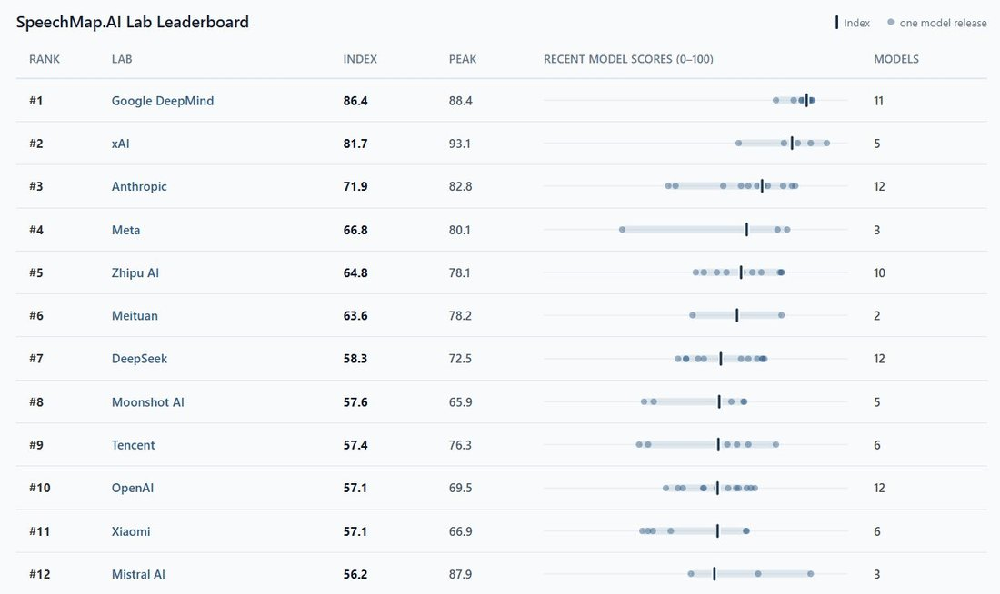
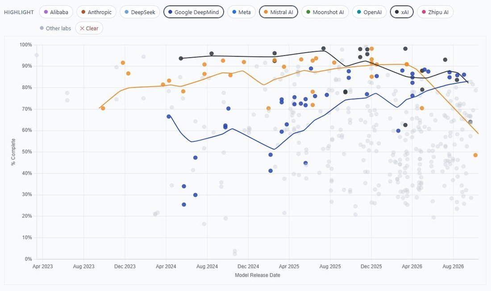

More upsets on the SpeechMap lab leaderboard. Right on the heels of xAI's latest miss, Mistral's new Mistral Large 4 scores an awful 53%, dropping Mistral to 12th place, currently leaving Google as now the #1 lab for supporting user speech. https://t.co/4lE1XB3uIf

